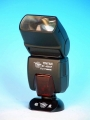

zhzqq0072013-09-11 01:293.67 分
操作性 4.00功能性 3.00美观性 3.50趣味性 3.00耐用性 3.50性价比 5.00
田伟2013-02-17 18:074.75 分
操作性 5.00功能性 4.00美观性 4.50趣味性 5.00耐用性 5.00性价比 5.00
120zzz2012-05-06 14:114 分
操作性 4.00功能性 4.00美观性 4.00趣味性 4.00耐用性 4.00性价比 4.00
灵济2008-12-15 13:474.58 分
操作性 4.50功能性 4.50美观性 4.50趣味性 4.50耐用性 4.50性价比 5.00
娄上飞2008-05-11 18:274.25 分
操作性 4.50功能性 4.00美观性 4.00趣味性 4.00耐用性 4.50性价比 4.50
alanyang2005-02-20 14:220.58 分
操作性 1.00功能性 0.50美观性 0.50趣味性 0.50耐用性 0.50性价比 0.50
bignose2004-05-16 11:523.58 分
操作性 4.00功能性 4.00美观性 3.00趣味性 3.00耐用性 4.00性价比 3.50
beaver2004-03-31 15:053.33 分
操作性 3.50功能性 4.00美观性 4.00趣味性 3.50耐用性 2.50性价比 2.50

yandc2003-12-21 14:323.75 分
操作性 4.00功能性 4.50美观性 3.50趣味性 3.50耐用性 3.50性价比 3.50
灵济2003-06-05 11:34